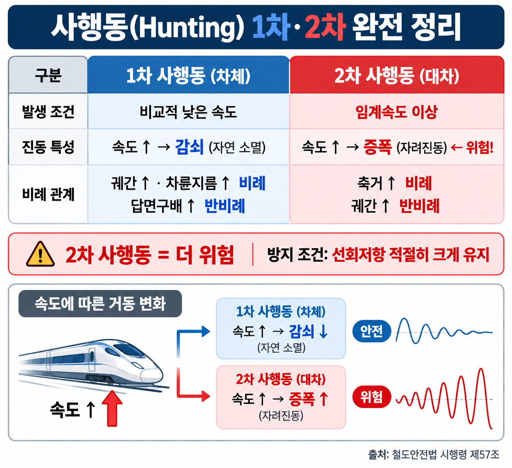

핵심 개념 — 사행동 (SOURCE 89)
SOURCE 89
1차 사행동 (차체 사행동 = 1축 사행동)
발생 조건: 비교적 낮은 속도에서 발생. 속도 증가 시 감쇠되어 진동이 줄어든다.
▲ 비례 (클수록 커짐)
• 궤간이 넓을수록
• 차륜 지름이 클수록
▼ 반비례 (클수록 작아짐)
• 차륜 답면 구배가 클수록
SOURCE 89
2차 사행동 (대차 사행동 = 2축 사행동)
발생 조건: 임계속도 이상에서 발생. 자려진동(self-excited vibration). 속도 초과 시 진폭 증폭, 감쇠되지 않는다.
▲ 비례 (클수록 커짐)
• 1축 사행동에 비례
▼ 반비례 (클수록 작아짐)
• 궤간에 반비례
→ 궤간이 좁을수록 2차 사행동 커짐
• 축거(고정축간 거리) 클수록 작아짐
함정: 2차 사행동은 궤간에 반비례한다. "궤간이 좁을수록 작아진다" → 틀린 설명. 궤간이 좁을수록 커진다.
SOURCE 89
사행동 방지 대책
| 방지 방법 | 효과 |
|---|
| 대차의 선회저항 크게 | 사행동 파장 증가 → 저감 |
| 차륜 지름 크게 | 사행동 파장 증가 → 저감 |
| 차륜 답면 기울기 작게 | 사행동 파장 증가 → 저감 |
| 고정축간 거리 크게 | 사행동 파장 증가 → 저감 |
핵심: 사행동 파장을 크게 → 대차 사행동 최소화. 선회저항↑, 차륜지름↑, 답면기울기↓, 고정축간거리↑
1차 vs 2차 사행동 비교표
| 구분 | 1차 사행동 (1축) | 2차 사행동 (대차) |
|---|
| 발생 속도 | 낮은 속도 | 임계속도 이상 |
| 속도 증가 시 | 감쇠 (진동 줄어듦) | 증폭 (진동 커짐) |
| 진동 성격 | 감쇠 진동 | 자려진동 (발산) |
| 궤간과의 관계 | 넓을수록 커짐 (비례) | 좁을수록 커짐 (반비례) |
| 축거와의 관계 | — | 클수록 작아짐 (반비례) |
| 답면 구배 | 클수록 작아짐 (반비례) | — |
시각 자료

VIS-077 | 사행동 1차·2차 비례관계 도해
기출 문항
문항 1 / 3
주행 속도를 높여도 감쇠되지 않는 사행동은?
① 1차 사행동
② 2차 사행동(대차사행동)
③ 차량 전체 사행동
④ 축간 사행동
정답 ② — 2차 사행동(대차사행동)은 임계속도 이상에서 발생하며 속도 증가 시 진동이 감쇠되지 않고 오히려 증폭된다. 1차 사행동은 낮은 속도에서 발생하고 속도 증가에 따라 감쇠된다.
문항 2 / 3
열차의 사행동에 대한 설명으로 옳지 않은 것은?
① 1축 사행동은 궤간이 넓을수록 커지고, 차륜 답면의 구배가 클수록 작아진다
② 2축 사행동(대차사행동)은 1축 사행동에 비례한다
③ 2축 사행동(대차사행동)은 궤간이 좁을수록 작아지고, 축거가 길수록 작아진다
④ 1축 사행동은 속도가 높아지면 진동수가 높아지고 14m의 파장을 갖는다
정답 ③ — 2축 사행동은 궤간에 반비례하므로 궤간이 좁을수록 커진다. "좁을수록 작아진다"는 틀린 설명이다. 또한 축거가 길수록 작아지는 것(반비례)은 맞다.
문항 3 / 3
대차 사행동을 줄이는 방법으로 옳은 것은?
① 차륜 지름을 작게 한다
② 차륜답면 기울기를 크게 한다
③ 고정축 간거리를 작게 한다
④ 대차의 선회저항을 크게 한다
정답 ④ — 사행동 파장을 크게 하면 대차 사행동을 최소화할 수 있다. 파장을 크게 하는 조건: 차륜 지름 크게, 차륜답면 기울기 작게, 고정축간 거리 크게, 대차의 선회저항 크게.